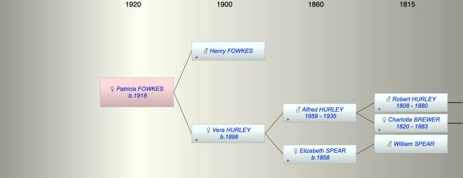

| [Index] |
| Patricia Mary FOWKES (1918 - ) |
|  |
| b. 1918 at Manchester |
| Near Relatives of Patricia Mary FOWKES (1918 - ) | ||||||
| Relationship | Person | Born | Birth Place | Died | Death Place | Age |
| Grandfather | Alfred Robert HURLEY | 14 Aug 1859 | Alphington | 1935 | 76 | |
| Grandmother | Elizabeth SPEAR | 1858 | Petrockstowe Devon | |||
| Father | Henry Arthur FOWKES | |||||
| Mother | Vera Hilda Mary HURLEY | 1898 | Exeter | |||
| Self | Patricia Mary FOWKES | 1918 | Manchester | |||
| Sister | Audrey Sheila FOWKES | 1921 | Altricham | |||
| Uncle | Alfred Willam HURLEY | 1887 | Devonport | |||
| Uncle | Living or Recently Deceased | |||||
| Aunt | Living or Recently Deceased | |||||
| Uncle | Charles Thomas COLE | 20 Apr 1891 | ||||
| Cousin | Living or Recently Deceased | |||||
| Cousin | Ronald A COLE | 10 Dec 1920 | ||||
| Events in Patricia Mary FOWKES (1918 - )'s life | |||||
| Date | Age | Event | Place | Notes | Src |
| 1918 | Patricia Mary FOWKES was born | Manchester | |||
| Created on a Mac™ using iFamily for Mac™ on 15 Sep 2023 |